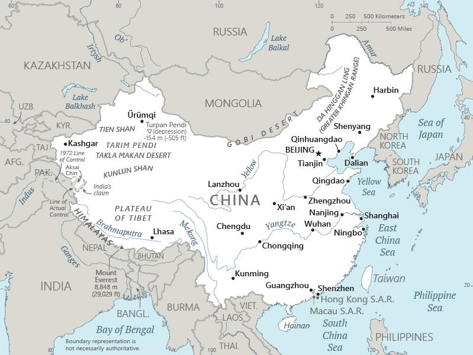

Genel Bilgiler
Çin, Doğu Asya’da yer alan tek partili bir sosyalist cumhuriyettir. Başkenti Pekin’dir. Yaklaşık 1,4 milyar nüfusa sahiptir ve dünyanın en kalabalık ülkesidir. Resmî dili Mandarin Çincesi’dir ve para birimi Çin Yuanı (CNY)’dır. Çin, BM Güvenlik Konseyi’nin daimi üyesidir ve ekonomik, politik ve kültürel açıdan küresel bir güçtür.
Çin, kuzeyde Moğolistan ve Rusya, doğuda Kore ve Pasifik Okyanusu, güneyde Vietnam, Laos, Myanmar, Hindistan, Bhutan ve Nepal, batıda Kazakistan, Kırgızistan, Tacikistan ve Afganistan ile çevrilidir. Yüzölçümü yaklaşık 9.597.000 km²’dir. Ülke coğrafyası çöller, dağlar, ovalar ve nehirler ile çeşitlenir; büyük nehirleri Yangtze ve Huang He’dir.
Başkent: Pekin
Kıta: Asya
Yüzölçümü: 9.596.961 km²
Nüfus (2025): 1.408.000.000
Bayrak Anlamı: Çin bayrağı kırmızı zemin üzerinde sol üst köşede bir büyük ve dört küçük sarı yıldızdan oluşur. Kırmızı zemin devrimi ve Çin halkının birliğini, sarı yıldızlar Komünist Parti liderliğinde halkın birliğini simgeler. Bayrak 1949 yılında resmî olarak kabul edilmiştir.
Çin Haritası
Ekonomi
Çin ekonomisi dünyanın en büyük ikinci ekonomisidir ve sanayi ile ihracata dayalıdır. Üretim, elektronik, otomotiv, tekstil ve kimya sektörleri öne çıkar. Tarımda pirinç, buğday, mısır ve sebze yetiştirilir. Hizmet sektörü hızlı büyümekte olup finans, lojistik ve turizm alanlarında önemlidir. Çin, altyapı yatırımları ve teknoloji geliştirme konusunda küresel bir liderdir.
| Yıl | İhracat (Milyar $) | İthalat (Milyar $) |
|---|---|---|
| 2019 | 2499 | 2138 |
| 2020 | 2430 | 2045 |
| 2021 | 2620 | 1960 |
| 2022 | 3000 | 2500 |
| 2023 | 3200 | 2700 |